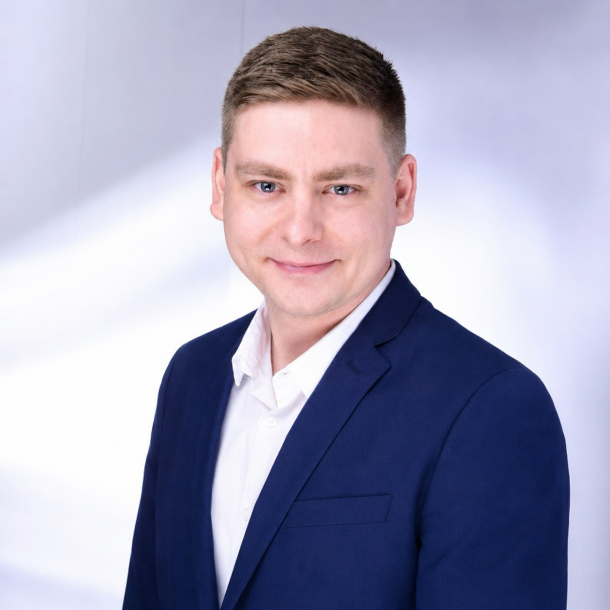

01
Technische Problemanalyse & Troubleshooting
Technische Ursachen eingrenzen, Zusammenhänge bewerten und Verbesserungen für bestehende Prozesse und Systeme entwickeln.
Komplexe industrielle Probleme. Technisch durchdachte Lösungen.
ACaRevo entwickelt und realisiert Engineering-Lösungen für komplexe Prozesse, Technologien und Herausforderungen in der Prozessindustrie – von der Prozessentwicklung und Optimierung über Scale-up und Automatisierung bis zur technischen Umsetzung.
Ich übernehme klar umrissene Engineering-Aufgaben für kleine und mittlere Unternehmen – von der technischen Analyse über Entwicklung und Erprobung bis zur Umsetzung. Modellierung und digitale Methoden setze ich dort ein, wo sie die technische Lösung verbessern.
Technische Ursachen eingrenzen, Zusammenhänge bewerten und Verbesserungen für bestehende Prozesse und Systeme entwickeln.
Prozesse und Fertigungsabläufe entwickeln, erproben und für Scale-up oder industrielle Anwendung weiterentwickeln.
Technische Anforderungen und Schnittstellen klären, Systeme entwickeln oder integrieren und die Umsetzung begleiten.
Modelle, Simulationen und Prozessdaten nutzen, um technisches Verhalten besser zu verstehen und Entscheidungen zu unterstützen.
Jedes Projekt beginnt mit einer konkreten technischen Fragestellung. Ich erfasse zunächst das System und seine Randbedingungen, analysiere die entscheidenden Einflussgrößen und entwickle daraus eine technisch belastbare Lösung. Je nach Aufgabe kommen dabei Daten, Experimente, Modellierung, Simulation, Automatisierung oder andere Engineering-Methoden zum Einsatz.
Prozess, Material, Produkt, Anlage und Randbedingungen erfassen und die eigentliche technische Problemstellung klar definieren.
Technisches Wissen, Daten, Experimente und Engineering-Analyse kombinieren, um Ursachen, Zusammenhänge und entscheidende Einflussgrößen zu identifizieren.
Prozesse, Materialien, technische Konzepte, Systeme oder Fertigungslösungen entwickeln und gezielt weiterentwickeln.
Lösungen experimentell, analytisch oder technisch erproben, bewerten und iterativ optimieren.
Entwickelte Lösungen auf Pilot- und industrielle Maßstäbe übertragen, Prozesse stabilisieren und für die praktische Anwendung weiterentwickeln.
Engineering-Ergebnisse in Fertigung, Anlagen, Automatisierung oder den industriellen Betrieb überführen.
ACaRevo unterstützt insbesondere kleine und mittlere Unternehmen bei konkreten technischen Entwicklungs-, Optimierungs- und Umsetzungsaufgaben – flexibel und genau dann, wenn zusätzliches Engineering-Know-how benötigt wird.
Chemische Produktion, Spezialchemie, Recycling, Prozessentwicklung und technologieintensive Produktionsprozesse.
Technische Systeme, Anlagen, Prüf- und Entwicklungssysteme sowie deren Integration, Optimierung und Inbetriebnahme.
Unternehmen mit anspruchsvollen Materialien, Beschichtungen, Pulvern oder anderen werkstofftechnischen Entwicklungsaufgaben.
Unternehmen mit eigener Fertigung, die für technische Entwicklungs-, Optimierungs-, Transfer- oder Scale-up-Aufgaben zeitlich begrenzt zusätzliche Engineering-Kompetenz benötigen.
Auch außerhalb dieser Bereiche ist ACaRevo offen für individuelle technische Fragestellungen und neue Formen der Zusammenarbeit.
Eine Auswahl meiner Projekte aus der industriellen Entwicklung, dem Engineering und der wissenschaftlichen Arbeit.
Technische Bewertung neuer Abfallströme für das industrielle Recycling, einschließlich Laboruntersuchungen, Destillation, Identifikation verwertbarer Fraktionen und Bewertung geeigneter Recyclingwege.
Entwicklung und Optimierung von Katalysatortinten, Beschichtungs-, Trocknungs- und Transferprozessen sowie Überführung von CCM/MEA-Fertigung in Pilot- und industrielle Maßstäbe.
Entwicklung und Skalierung eines pulverbasierten Herstellungsprozesses für poröse Titan-Transportschichten einschließlich Prozessentwicklung, Extrusion und Überführung in die industrielle Anwendung.
Entwicklung und Integration kundenspezifischer automatisierter Mess- und Testsysteme einschließlich Messtechnik, Software-Schnittstellen, Datenkommunikation, automatisierter Prüfabläufe und Inbetriebnahme.
Entwicklung nichtlinearer dynamischer Prozessmodelle, Analyse von Stabilität und Mehrfachgleichgewichtszuständen sowie Entwicklung modellbasierter Regelungsstrategien für komplexe chemische und biochemische Prozesse.
Einsatz von Prozessdaten, Prozessmodellierung und Simulation zur Analyse, Optimierung und Weiterentwicklung von Feststoffprozessen im industriellen Maßstab.
Vertrauliche Industrieprojekte werden ausschließlich anhand öffentlich zugänglicher oder anonymisierter Informationen dargestellt.
Von kleinen familiengeführten Unternehmen und dem klassischen Mittelstand über spezialisierte Engineering-Unternehmen bis hin zu einem weltweit führenden Chemiekonzern.
Gründer & Principal Engineer
Adrian Ciesielski verbindet mehr als zwölf Jahre Erfahrung in Industrie, Engineering und Forschung – von der chemischen Produktion und analytischen Chemie über Prozessentwicklung, automatisierte Engineering-Systeme und Wasserstofftechnologien bis hin zu Fertigungsentwicklung, Scale-up und Digital Engineering.
Sein wissenschaftlicher Hintergrund in Chemie, Verfahrenstechnik, Prozesssystemen, Modellierung und Regelungstechnik ergänzt diese praktische Erfahrung und ermöglicht ihm, technische Fragestellungen aus unterschiedlichen Perspektiven zu bearbeiten.
Chemische Produktion, Qualitätssicherung, Prozess- und Produktoptimierung, Recyclingprozesse und technische Prozessentwicklung.
Entwicklung funktionaler Materialien und Elektroden für Brennstoffzellen und Elektrolyse, Beschichtungs- und Fertigungstechnologien, Scale-up und Industrialisierung.
Automatisierte Mess- und Testsysteme, Steuerungs- und Automatisierungskonzepte, Systemintegration und technische Inbetriebnahme.
Prozessmodellierung und Simulation, digitale Zwillinge, Datenanalyse, Prozessdigitalisierung und datenbasierte Engineering-Methoden.

Die wissenschaftliche Arbeit von Adrian Ciesielski umfasst Polymerchemie, elektrochemische Materialien, Verfahrenstechnik, Prozesssysteme, Modellierung und Regelungstechnik. Sie verbindet grundlegende wissenschaftliche Fragestellungen mit der Entwicklung und Analyse technischer Prozesse und Systeme.
Mehr über meinen akademischen Werdegang und die fachlichen Schwerpunkte hinter meiner Engineering-Arbeit erfahren Sie hier.
Akademischer Hintergrund ansehen→Ob Prozess, Material, Fertigungstechnologie, Engineering-System oder neue Technologie:
Lassen Sie uns daran arbeiten.
contact@acarevo.com